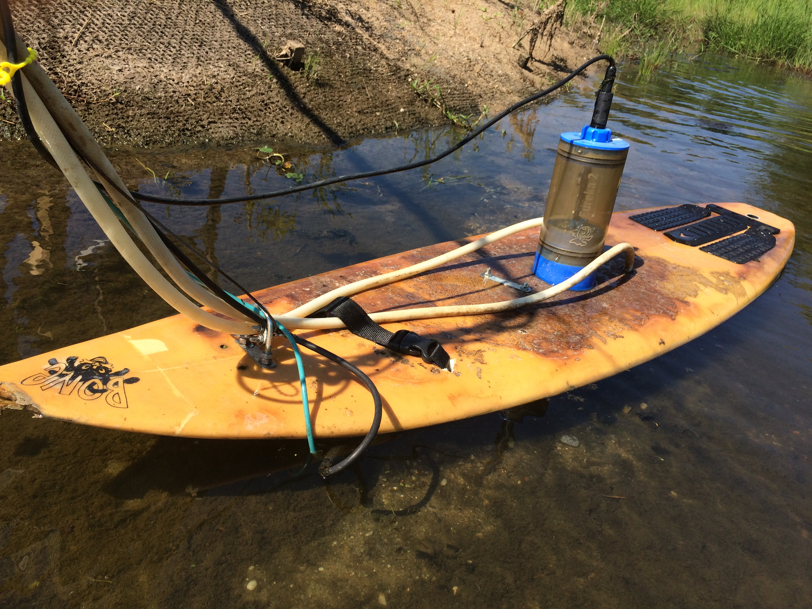

Much of hydrology and water quality of natural stream and rivers is like an action movie: it is unpredictable and if we miss part of the movie, we run the risk of misunderstanding the whole story.
Until very recently, to understand the “hydrological action movie” we had around 20-30 still images, i.e., concentration data points, per year… An entire world is opening before our eyes thanks to new water quality sensors, which for the first time in history, give access to the full water quality story happening in streams, lakes and wetlands, in time and in space. This is the new hydrological revolution at play right now!
We are proponents of this technical revolution and we aim to address :
I am an Associate Professor of Hydrology and Ecological Engineering in the Department of Biological and Agricultural Engineering at North Carolina State University in Raleigh, NC, USA. I direct the Biogeochemistry and Ecological Engineering Water lab where we try to improve the treatment efficiencies of streams, wetlands, soils or woodchip bioreactors.
Prior to my tenure at NC State, I worked as an engineering researcher at Cemagref in France (now Irstea) where I played an active role in maintaining longterm environmental observatories. Much of our current research methods are rooted in the metrology of flow and water quality in small catchments (< ~200 km²).
We are poised to make an impact to improve our understanding of biogeochemical processes in systems such as streams, wetlands, soils or denitrification beds, collectively refered to as “treatment systems”, so as to enhance their ability improve water quality.
Our core method is the deployment of ‘continuous’ water quality sensors to obtain concentration data at a high resolution in space and in time. For this we have shown that we could use in situ spectrophotometers and measured absorbance as index data to develop what we refer to as water quality rating curves. Additionally, we have designed and built sequential autosamplers that add spatial resolution to the high resolution in time brought by the water quality sensors. These systems offer a true revolution in the way we understand and design treatment systems.

Etheridge, J. R, M. R. Burchell II and F. Birgand (2017). “Can created tidal marshes reduce nitrate export to downstream estuaries?” In: Ecol. Eng. 105, pp. 314-324. DOI: 10.1016/j.ecoleng.2017.05.009.
Birgand, F, K. Aveni-Deforge, B. Smith, B. Maxwell, M. Horstman, A. B. Gerling and C. C. Carey (2016). “First report of a novel multiplexer pumping system coupled to a water quality probe to collect high temporal frequency in situ water chemistry measurements at multiple sites”. In: Limnol. Oceanogr. Methods 14.12, pp. 767-783. DOI: 10.1002/lom3.10122.
Etheridge, J. R, F. Birgand, J. A. Osborne, C. L. Osburn, M. R. Burchell and J. Irving (2014). “Using in situ ultraviolet-visual spectroscopy to measure nitrogen, carbon, phosphorus, and suspended solids concentrations at a high frequency in a brackish tidal marsh”. In: Limnol. Oceanogr. Methods 12.1, pp. 10-22. DOI: 10.4319/lom.2014.12.10.
Birgand, F, G. Lellouche and T. W. Appelboom (2013). “Measuring flow in non-ideal conditions for short-term projects: Uncertainties associated with the use of stage-discharge rating curves”. In: J. Hydrol. 503, pp. 186-195. DOI: 10.1016/j.jhydrol.2013.09.007.
Birgand, F, C. Faucheux, G. Gruau, F. Moatar and M. Meybeck (2011). “Uncertainties in Assessing Annual Nitrate Loads and Concentration Indicators: Part 2. Deriving Sampling Frequency Charts in Brittany, France”. In: Trans. ASABE 54.1, pp. 93-104. DOI: 10.13031/2013.36263.
Birgand, F, R. W. Skaggs, G. M. Chescheir and J. W. Gilliam (2007). “Nitrogen Removal in Streams of Agricultural Catchments-A Literature Review”. In: Crit. Rev. Environ. Sci. Technol. 37.5, pp. 381-487. DOI: 10.1080/10643380600966426.